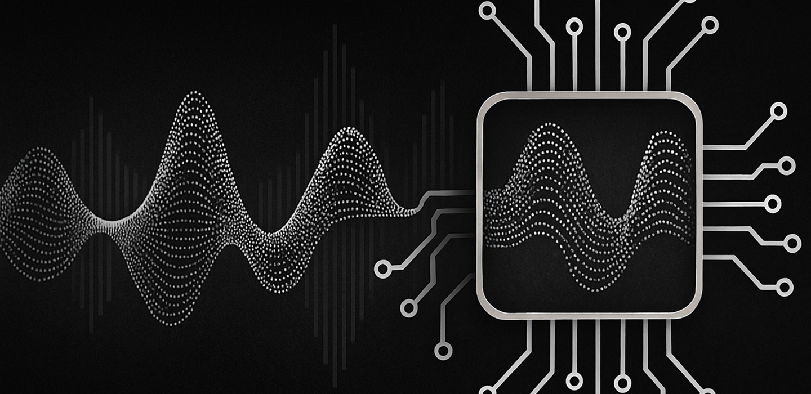

How to Create an Immersive Party Experience with Pro Audio Lighting
Alpha Acoustics
26 July 2025

It was the grand opening of an ultra-modern indoor stadium in Dubai. Hundreds of guests, investors, and VIPs filled the arena. The lighting was perfect. The visuals, stunning. But when the
microphone cracked on and the first words echoed across the hall, a sharp, metallic feedback pierced the room. The audio engineer frantically adjusted knobs, but the sound remained
muddy—an unbalanced chaos of bass booms and hollow treble.
That moment is a nightmare no event organizer or audio technician wants to experience. And yet, this scenario happens far too often in venues that overlook one game-changing
technology: Digital Signal Processing or DSP.
At Alpha Acoustics, we’ve built our reputation not just on creating powerful audio systems, but on integrating intelligent signal control that adapts to any environment—big or small. This
blog dives into the science, the storytelling, and the soul of sound—exploring how DSP doesn’t just fix audio issues, but transforms the way your audience experiences every beat, voice,
and note.
Let’s strip it down: Digital Signal Processing refers to the manipulation of audio signals in the digital domain. When analog sound is captured—through a mic, for instance—it is converted into digital data. DSP algorithms then analyze and modify this data in real time to improve clarity, balance frequencies, reduce noise, and manage speaker output.
But DSP isn’t just about “cleaning up” sound. It’s about engineering emotion through precision.
Imagine it as the brain within your speaker system—listening to every vibration and reacting instantly. Where old-school systems rely on manual adjustments, DSP thinks for itself.
Let’s return to that failed stadium launch. A month later, the organizers approached Alpha Acoustics. They needed a partner who could not only deliver volume but deliver clarity, consistency, and control—no matter where someone was seated in the 3,000-capacity space.
We installed our KITE K10 speakers, driven by our proprietary DSP engine. The system was programmed to scan the environment in real time, identifying frequency hotspots, adjusting time delays, and compensating for architectural bounce.
At the next event—a college music festival—attendees noticed something profound. Whether standing by the stage or sitting under the rafters, the sound felt close, crisp, and utterly immersive.
This is the power of smart sound. This is the KITE difference.
Let’s break it down with real-life acoustical challenges:
With the Alpha Acoustics DSP Core, we offer solutions to all these issues out of the box. And because our DSP is embedded inside the KITE series, it doesn’t require external racks or
software. It’s all integrated—just plug, tune, and play.
Let’s get a bit more technical. Here’s what our DSP-equipped systems like the KITE K10 and KITE SUB18 do under the hood:
These aren’t buzzwords—they are real, scientific methods that transform “sound systems” into experience engines.
"If you want to find the secrets of the universe, think in terms of energy, frequency and vibration."
Sound is vibration. And mastering vibration is what makes your audio setup unforgettable. With DSP, we don’t just amplify—we refine, sculpt, and deliver audio artistry through math.
We understand your pain. You walk into a new site. The ceiling height is off. The crowd size doubled. Someone installed reflective wall tiles last minute. And you’re expected to make the
sound “perfect.”
With Alpha Acoustics DSP-powered speakers, you get:
You spend less time troubleshooting and more time crafting great sound.
The story of DSP is not just a story of cleaner sound—it’s a story of control, customization, and creativity. It turns a loudspeaker into a living, learning partner in delivering unforgettable
experiences.
At Alpha Acoustics, we believe in sound as an art and science as the brush. Our DSP integration across the KITE series isn’t a feature—it’s the foundation of our promise: to never let great
moments be lost in bad sound.
So, the next time you walk into a stadium, shopping mall, or rooftop bar powered by Alpha Acoustics, know this—there’s a brain behind every beat. A system silently working to make sure
what you hear is exactly what was meant to be heard.
Let’s engineer emotion. Let’s shape sound. Let’s go beyond volume—into clarity, consistency, and connection.
Explore our KITE Series speakers powered by advanced DSP technology.